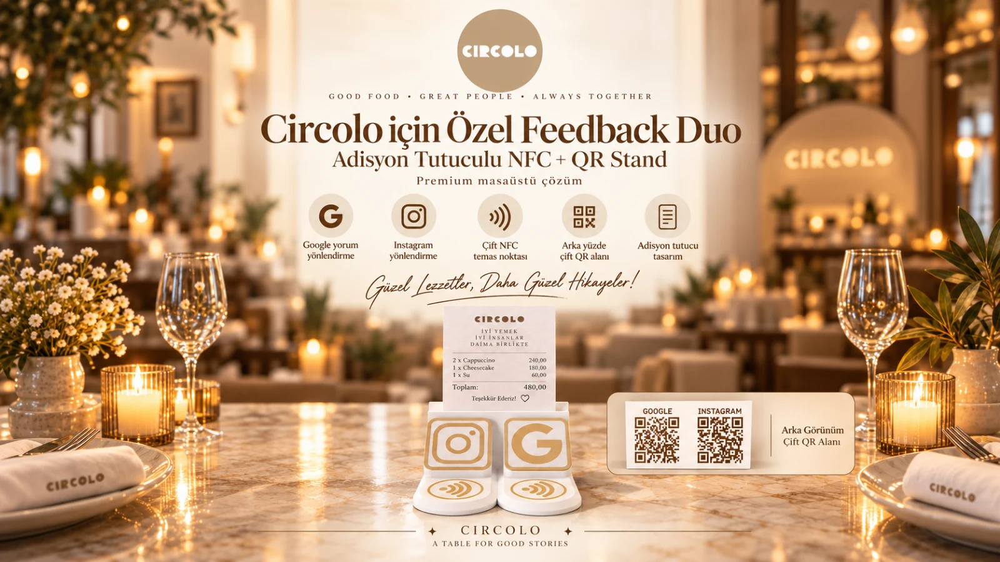
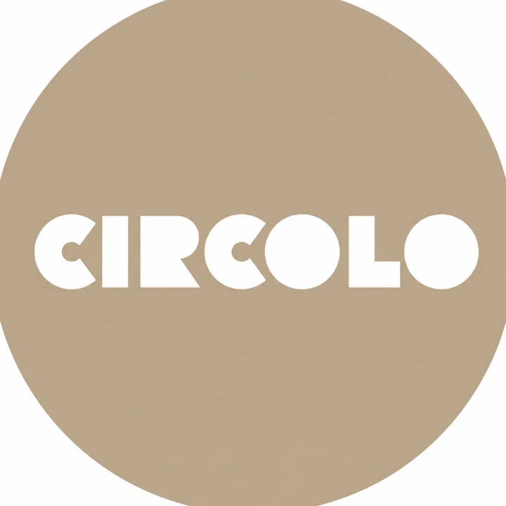

Restoran • Premium Feedback DuoCircolo Kuşadası
Circolo Kuşadası için adisyon tutuculu 5 adet BG Studio NFC Premium Feedback Duo standı tasarlanıp işletmeye entegre edildi. Her stand 2 NFC ve 2 QR erişimiyle çalışacak şekilde hazırlanarak toplam 10 NFC + 10 QR altyapısı kuruldu. Standların adisyon tutucu bölümü sayesinde hesap ve adisyon kağıtları masa üzerinde düzenli biçimde sunulurken, aynı ürün üzerinden dijital müşteri etkileşimi sağlanıyor. Misafirler NFC veya QR üzerinden doğrudan Google yorum ekranına ya da Circolo’nun Instagram hesabına geçebiliyor. Google ve Instagram yönlendirmeleri, NFC ve QR erişimleri, stand bazlı etkileşimler ve ziyaret verileri BG Studio NFC işletme panelinden takip ediliyor. Google tarafında canlı puan, toplam yorum sayısı ve güncel yorum verileri de sistem içerisinde görüntüleniyor.
Proje detayını gör ↗